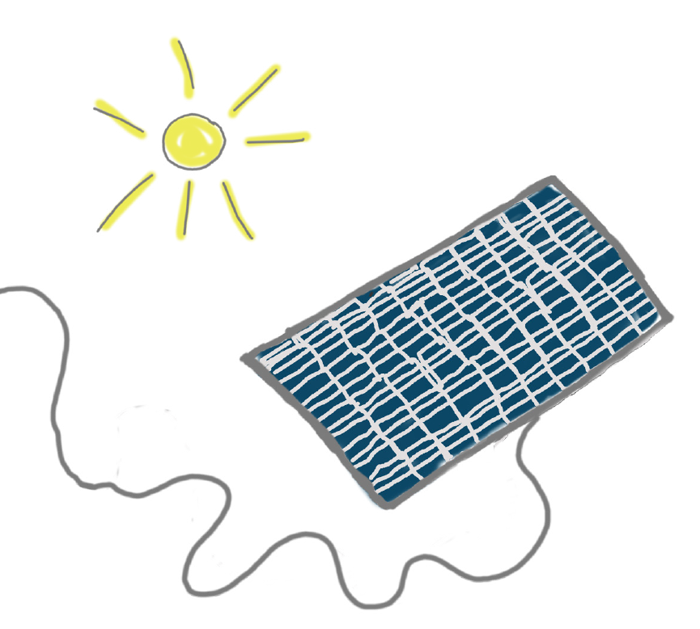
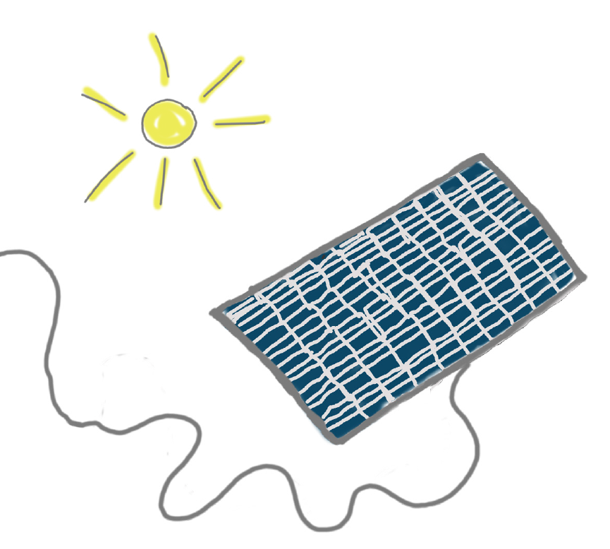
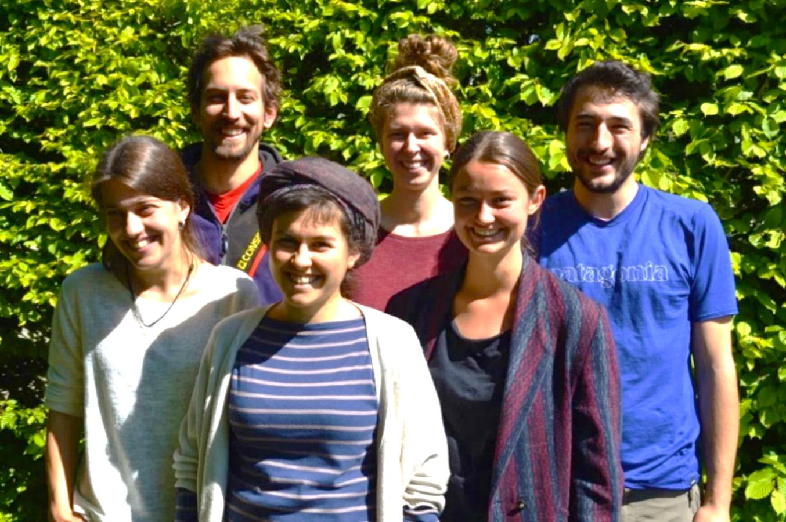
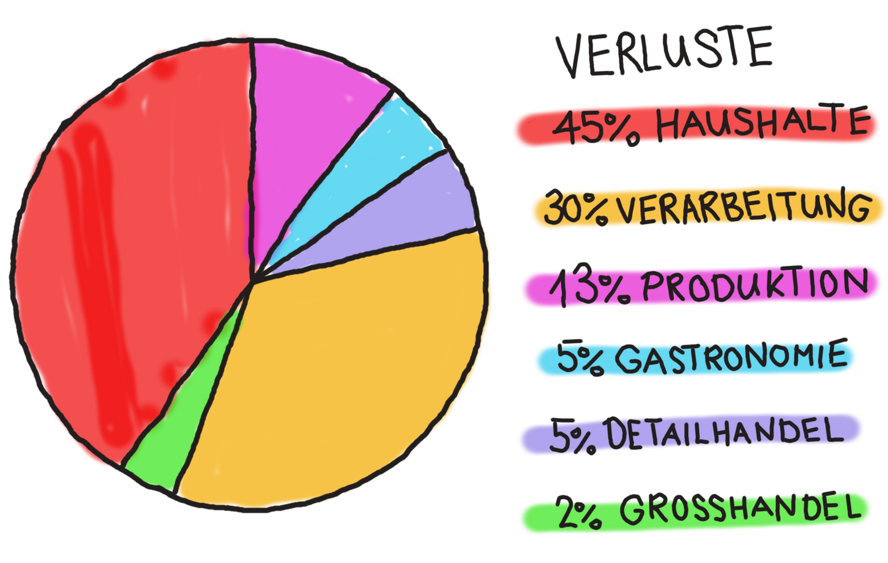

Unser Verein, delikatrestessen, besteht momentan aus Studierenden des Studiengangs Umweltingenieurwesen an der ZHAW in Wädenswil. In Zusammenarbeit mit dem Institut für Umwelt und natürliche Ressourcen (IUNR) und der AG Nachhaltige Entwicklung (LSFM) haben wir dieses Projekt zur Förderung der Nachhaltigkeit in Wädenswil ausgearbeitet.
delikatrestessen hat das Ziel die Lebensmittelverschwendung in der Stadt Wädenswil zu vermindern und auf diese Art für das Thema Nachhaltigkeit zu sensibilisieren. Durch verschiedene Kooperationen mit Supermärkten, Läden und Bauern in der Umgebung werden nicht verkaufte, noch geniessbare Lebensmittel abgeholt. Die Abholungen werden mit Hilfe freiwilliger Unterstützer organisiert. Die Lebensmittel werden anschliessend in den Kühlschrank am Standort Grüental gebracht. Dort ist jede und jeder dazu eingeladen sich zu bedienen. Insbesondere Menschen, denen der Zugang zu Lebensmitteln aus finanziellen Gründen erschwert ist.
So kannst du mitmachen:
Bei Fragen stehen wir jederzeit gerne zur Verfügung. Schreib uns einfach eine Mail mit deiner Anregung, Idee, Kritik oder Sorge…
 Die Initianten von delikatrestessen: v.l.n.r. Seraina Bokányi, Valentin Denzler, Nora Brügger, Charlotte Klinkvort, Vera Gautschi und Kilian Schlunegger
Wir sind Teil eines kleinen Netzwerkes in Wädenswil, wo wir noch geniessbare Lebensmittel abholen können, ebenso sind wir bemüht mit dem bestehenden Netzwerk zusammenzuarbeiten. Das ökologische und soziale Engagement vom Auerehuus und der Abgabestelle von Tischlein deck dich sowie Transition Wädenswil inspiriert und begeistert uns sehr und wir stehen mit ihnen im Austausch. Für uns ist es von zentraler Bedeutung ergänzend zu den bestehenden Projekten tätig zu werden und wir sehen grosses Potenzial darin uns gegenseitig zu unterstützen.
Den Detailhandel sehen wir als Wegbereiter für die Förderung eines nachhaltigen Konsumverhaltens, denn er erreicht mit seinem nachhaltigen Engagement die meisten KonsumentInnen. Um eine Sensibilisierung für Lebensmittelverschwendung in der Bevölkerung erlangen zu können, wünschen wir uns deshalb auch eine Zusammenarbeit mit Detailhändlern.
Während in anderen Ländern gehungert wird, haben wir mehr Nahrung zur Verfügung, als wir benötigen. Rund ein Drittel aller Lebensmittel in der Schweiz geht zwischen Feld und Teller verloren. Das entspricht pro Jahr rund 2 Mio. Tonnen Nahrungsmitteln oder der Ladung von rund 140’000 Lastwagen, die aneinandergereiht eine Kolonne von Zürich bis Madrid bilden.

Davon wird der Grossteil in den Haushalten verschwendet. Das sind Produkte, die wir in unserem täglichen Verbrauch nicht verwerten, weil wir zu viel eingekauft haben, die Portion zu gross war oder weil wir einfach keine Lust mehr auf die übrigen Pommes auf dem Teller haben. So werden pro Person täglich 320g Nahrungsmittel verschwendet, was fast einer ganzen Mahlzeit entspricht.
Quellen: wwf.ch und foodwaste.ch